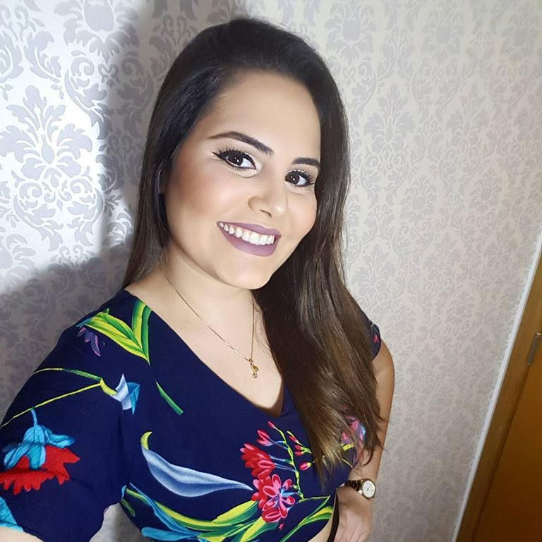

O Mapa Natal é a representação simbólica da posição dos astros e dos signos do zodíaco em relação à terra no preciso local e momento de nascimento do indivíduo. Por se repetir apenas a cada 26 milênios, é visto como a “impressão digital” do espírito por diversas escolas esotéricas, e sua interpretação permite um entendimento profundo e detalhado de nossas potencialidades e debilidades em diversas áreas da vida, apontando os melhores meios de se alcançar equilíbrio e satisfação.
O estudo de previsões é a utilização das técnicas de revolução solar, trânsitos planetários, progressões e lunações associadas, para prever as experiências pessoais a serem vividas em um período específico da vida. Possibilitando assim ao indivíduo se antecipar, não apenas para aproveitar ao máximo as tendências positivas, mas transformando os desafios em realizações.
O Mapa Cármico é o estudo da carta natal visando entender os condicionamentos cármicos herdados de vidas passadas e suas influências na atual encarnação, assinalando a melhor maneira de transcender esse carma e seguir no desenvolvimento pessoal.
A Sinastria é a comparação entre mapas natais com a finalidade de apontar as compatibilidades e desafios dentro de um relacionamento, gerando uma análise que propõe a melhor maneira de harmonizar a relação sem desrespeitar a individualidade das partes.
O Mapa Natal Aprofundado é o estudo direcionado àqueles que já fizeram seu mapa natal e gostariam de aprofundar ainda mais seu autoconhecimento através da astrologia.
O Estudo de Área da Vida é a análise do mapa natal, trânsitos e progressões direcionados para uma área específica de interesse do consulente, expondo as tendências positivas e negativas existentes.
O Mapa Infantil é a análise da carta natal de uma criança visando melhor entendimento de sua personalidade e potencialidades. Esse mapa auxilia os pais a enxergar melhor seus filhos, possibilitando assumir ações mais eficientes na educação, e contribuindo para o desenvolvimento de um ser humano consciente e feliz futuramente, sem gerar os famosos traumas.
O Tarot é um conjunto de cartas com desenhos simbólicos que desde a antiguidade é utilizado para revelar as energias que influenciam as situações perguntadas, permitindo ao consulente direcionar sua vida de modo mais eficaz a partir de suas aspirações. Essa ferramenta também pode ser usada para o autoconhecimento, trazendo à tona questões inconscientes, auxiliando assim o consulente na expansão de consciência.
Wasat é o nome popular da estrela central da constelação de gêmeos. Essa palavra em árabe significa “centro”, e para os esotéricos o termo se refere ao caminho do meio, uma maneira equilibrada de experienciar a vida evitando extremos. Dentro desse contexto esotérico, a astrologia se coloca como uma excelente ferramenta para nos auxiliar no autoconhecimento, possibilitando encontrar o equilíbrio em todas as áreas de nossas vidas.
Raphael Meneses
CRT 50255 / SBHolos 032 2017
Terapeuta Holístico Vibracional & Astrólogo
Há 9 anos tive meu primeiro contato com o universo da astrologia, e já nesse início minha afinidade com essa ciência foi instantânea e muito forte. Esse fascínio foi apenas aumentando ao longo dos anos, conforme me aprofundava nos conceitos astrológicos e os experimentava em minha própria vida. Convido você a me permitir levar essa magnífica ferramenta de autoconhecimento e evolução para sua vida, lhe ajudando a alcançar seu potencial pleno.
Formado Terapeuta holístico vibracional, Raphael possui uma visão integrativa do ser humano que, somada a sua década de experiência astrologia, permite interpretações dinâmicas e aprofundadas do mapa astral. Possibilitando assim o uso dessa magnífica ferramenta de autoconhecimento e evolução para sua vida, e lhe ajudando a alcançar seu potencial pleno de existência.
Depois que me consultei com o Raphael passei a enxergar mais claramente quem eu sou e porque eu tomava ou deixava de tomar certas atitudes em minha vida. Juntando sua sensibilidade, sua energia, e o estudo, que é extremamente sério, Rapha me ajudou em um mergulho interno e me deu orientações que vem se provando dia após dia. Com certeza evoluí MUITO como ser humano e tenho uma visão mais clara do universo. Obrigada por tudo!
Eu estava passando por um momento delicado na minha vida, de transição mesmo. Havia terminado um relacionamento intenso, e estava confusa na carreira, sem saber os rumos que ela iria tomar. O Rafa me trouxe, além de auto-conhecimento, uma sensação de paz de espírito. Aprendi muito com ele na leitura do meu mapa astral, aprendi a me conhecer melhor e a entender coisas e padrões que não compreendia antes. Além disso, ele tem uma sensibilidade muito grande, e os insights que ele trouxe pro nosso atendimento me ajudaram muito em diversos aspectos da minha vida. Ele se tornou um amigo. Uma pessoa em quem sempre pude confiar e contar. Durante a consulta pude me conhecer melhor e enfrentar meus problemas de forma mais evoluída. Minha energia mudou, as coisas começaram a fluir muito mais. Hoje faz mais de um ano um pouco que nos encontramos e eu fiz essa leitura. Posso dizer que sou outra pessoa, a sede de conhecimento e espiritualidade só cresceram. Obrigada Rafa!